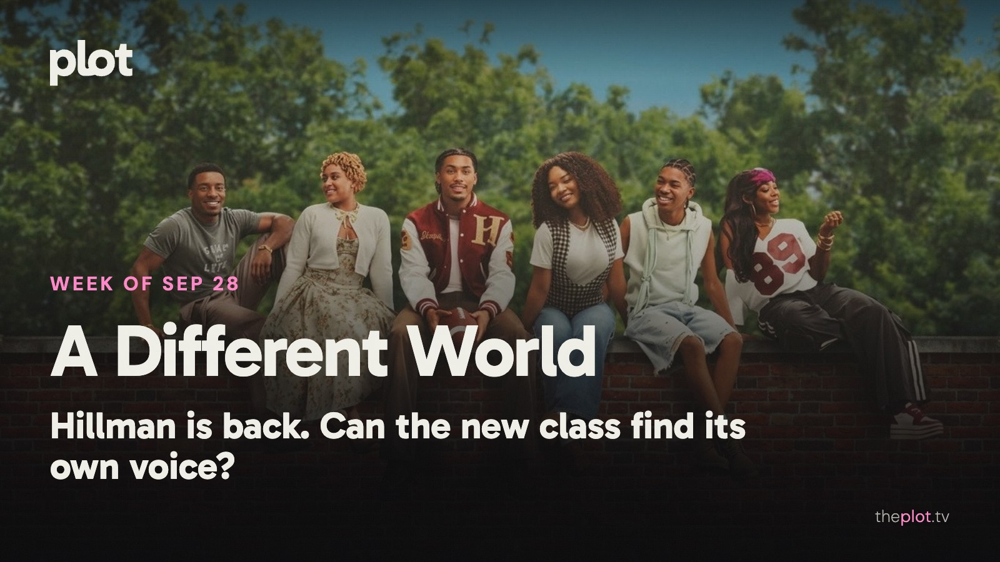

|
the week of September 28
|
|
Hillman College has reopened, and the welcome comes with a familiar question: how much past can a new show carry? Forgotten Island gives another friendship a much stranger test. Meanwhile, UNABOMBER and The Final Problem are on Netflix, Tom Cruise has an apocalypse to answer for on Friday, and the weekend has room for pirates made of LEGO and a fake relationship with very real complications.
 Image: A Different World (2026), promotional backdrop. Source: TMDB. Text overlay by Plot.
In theaters
Forgotten Island is DreamWorks' new friendship adventure, with Filipino folklore shaping the world its two leads have to escape. AP finds an affectionate, imaginative story in that journey. A family outing with an emotional bill for the adults.
Heart of the Beast sends Brad Pitt and a combat dog on a very bad trip through Alaska. Its roughly $20 million domestic debut over September 25-27 put it third for the weekend, behind the Avengers: Endgame re-release and Resident Evil in its second week. The survival thriller has a straightforward emotional advantage: you will want the dog to get home.
Primetime is now in theaters from A24, with Robert Pattinson leading Lance Oppenheim's move into narrative filmmaking. If your weekend movie needs fewer creatures and more human discomfort, this is the change of pace.
What everyone's talking about
A Different World is back at Hillman, but the biggest change is how it feels to spend time there. The original could tackle something serious and still send you out laughing. This sequel leans harder into campus crises and relationship drama. TVLine finds that shift leaves too little room for the old comic spark, even while praising Maleah Joi Moon's energy as Deborah. That gives returning viewers a better question than whether the cast still looks familiar: did you come back for these people, or for the way they used to make you feel?
Forgotten Island is prompting a conversation about being represented without being sold a cultural obligation. In a Filipino audience discussion, the opening post describes going in wary of the marketing and coming out won over by the friendship; replies also question whether the posters communicated the film's appeal. Fresh Fiction celebrates its affection for eccentric girls and the bond between its leads. The folklore gives the adventure its identity. The fear of losing your best friend gives someone outside that culture a way in. Find Forgotten Island on Plot.
Production note. This line is not in the sent letter.
GIF: Returning somewhere familiar and discovering everything has moved. Savannah to choose the GIF. Now on TV and Streaming
 Image: UNABOMBER (2026), promotional backdrop. Source: TMDB.
UNABOMBER is on Netflix from September 25. Jacob Tremblay plays the young Ted Kaczynski in a drama that moves between his early life and the hunt for him. For viewers drawn to the making of a notorious figure, rather than a case presented only from the investigators' side.
 Image: The Final Problem (2026), promotional backdrop. Source: TMDB.
The Final Problem traps a fading actor in a hotel with an actual suspicious death. His old detective role suddenly becomes a job description. The Spanish mystery arrived on Netflix September 25. Save it for the mood where everyone is a suspect and you intend to announce your theory far too early.
 Image: A Different World (2026), promotional backdrop. Source: TMDB.
A Different World follows Deborah Wayne, the daughter of Dwayne and Whitley, into her own freshman year at Hillman. The new Netflix series began September 24. The original's fans have familiar faces to welcome back; new viewers have friendships, ambition, and the problem of growing up under someone else's reputation.
Less scrolling. Better watching. Your weekly guide to what's on, what's coming, and what's actually worth your time.
Coming up
|
|
You're receiving this because you subscribed at theplot.tv.
Unsubscribe
SUSUMU HOUSE · Level 1, 63-73 Ann Street, Surry Hills, NSW 2010 |
 Play the official trailer
Play the official trailer Play the official trailer
Play the official trailer Play the official trailer
Play the official trailer